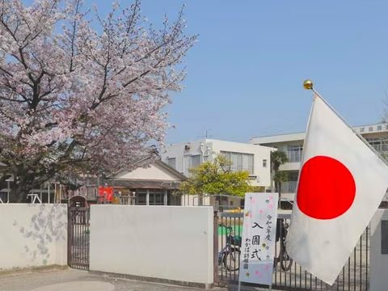

出会いを大切にする保育
社会に出てからも伸びていく「生きる力」を持った子どもを育てる、千種区の幼稚園です。昭和28年の創立から、子どものことを一番に考える保育を続けています。
まずは、園を見にきてください
転入園をご希望の方は、受け入れ状況をお電話でお問い合わせください。見学は随時受け付けています。
お電話でのお問い合わせ052-782-3651受付時間 平日 9:00〜15:00
wakaba.kindergarten
わかばの毎日を
Instagramでお届けしています
あそびや行事、季節の園庭のようすなど、子どもたちの「いま」を写真で発信しています。
Instagramを見る読み取ってください
アクセス
Access住所〒464-0032
名古屋市千種区猫洞通2丁目13番地
名古屋市千種区猫洞通2丁目13番地
徒歩地下鉄東山線 本山駅から徒歩13分
バス最寄りのバス停：猫洞通2丁目
駐車場園の北側敷地内／南側の道路向かい、美濃忠さん隣
電話（平日 9:00〜15:00）052-782-3651